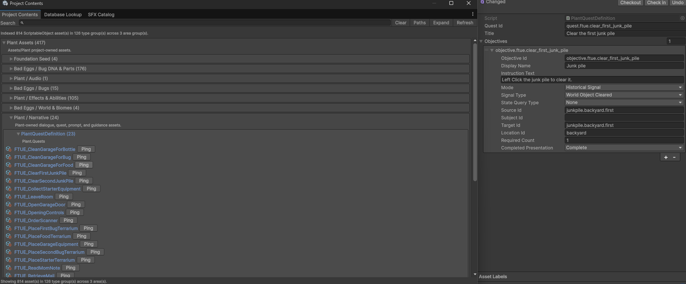
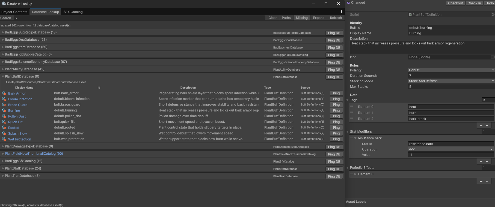
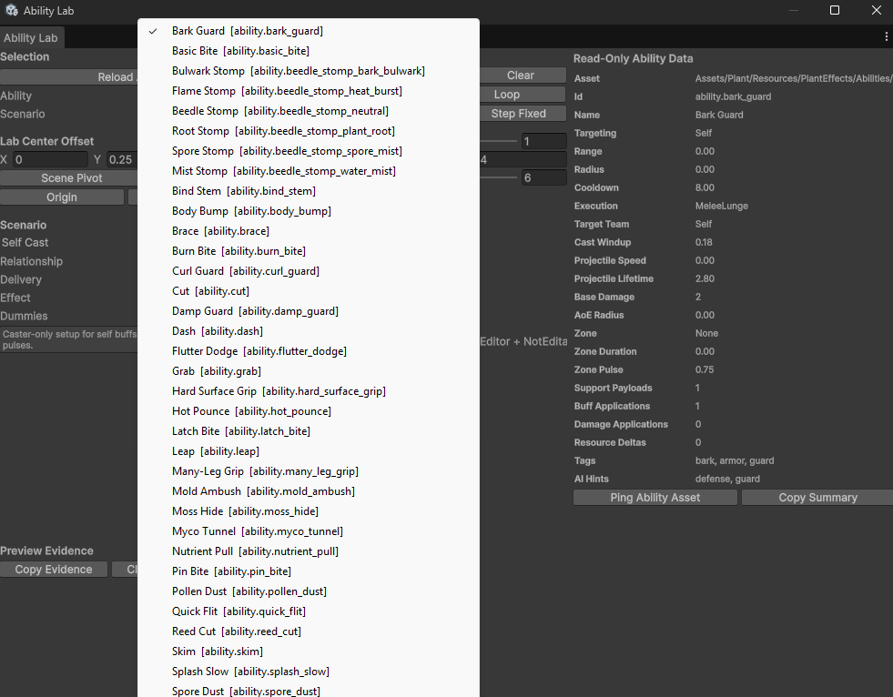
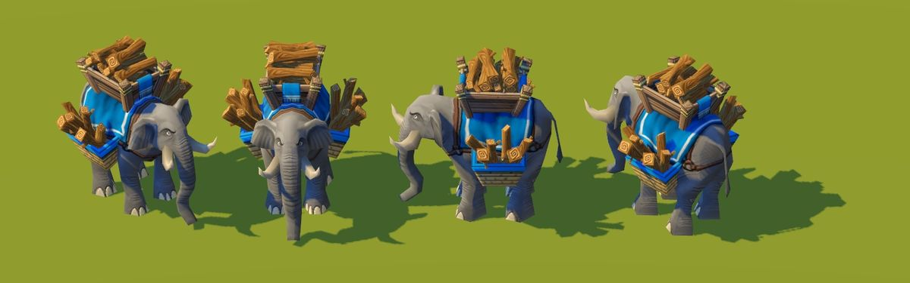
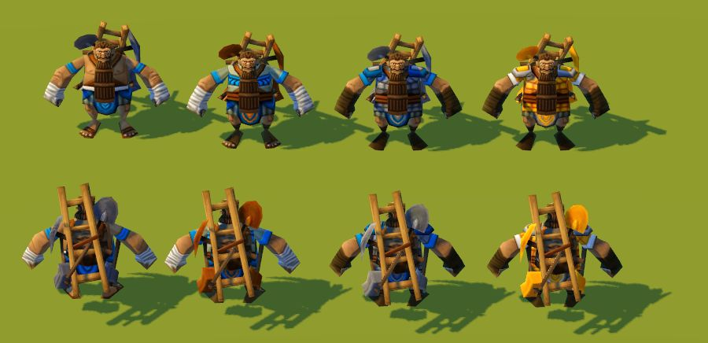
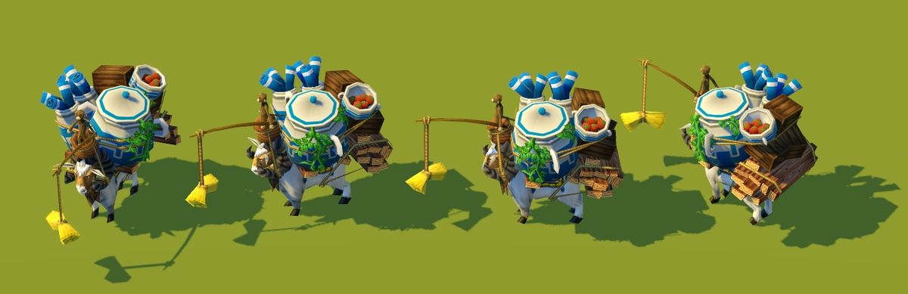
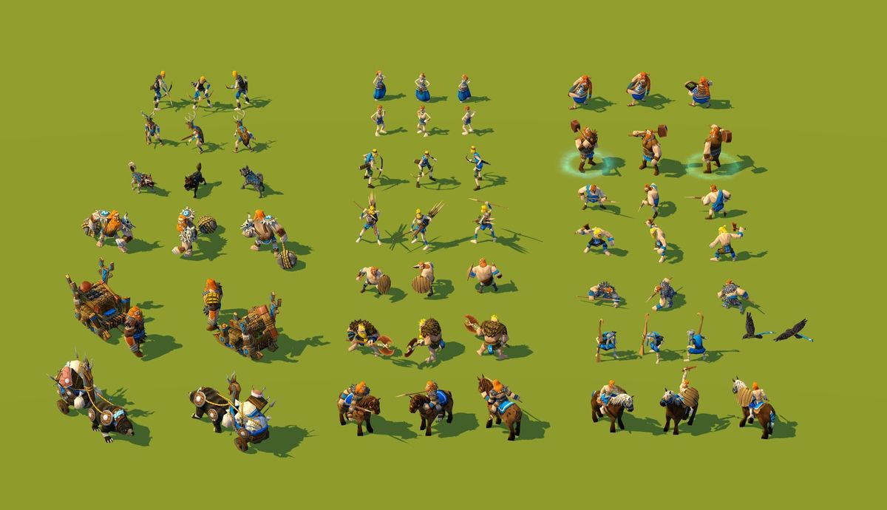

UEFN / Unreal Engine, Verse
Roster, equipment, and synergies
Collection surfaces, equipped hero slots, progression, resource readouts, and synergy presentation backed by the character data pipeline.
UEFN / Unreal Engine, Verse

I led engineering direction and creative execution for He-Man Heroes, a branded Fortnite/UEFN project built for Mattel's Masters of the Universe franchise through Loot Foundry.
The work sat at the intersection of client expectations, IP style-guide constraints, UEFN/Verse implementation, runtime systems, optimization budgets, UI structure, and production delivery.
A major part of the implementation was the character data layer: roster values, power curves, skills, passives, synergies, upgrade state, and UI-facing data hand-authored through spreadsheet export and Verse code.
Collection surfaces, equipped hero slots, progression, resource readouts, and synergy presentation backed by the character data pipeline.

Character detail screen communicating role, power, rarity, armor state, stats, skills, passives, tiers, unlocks, XP, and party controls from the Verse-backed data set.
Skill map
Unity/C#, movement, traversal, combat rules, stats, inventory, UI surfaces, input, progression gates, physics prototypes, and runtime state.
Progression loops, reward structures, onboarding, tuning, pacing, player flows, moment-to-moment feel, and feature specs that stay buildable.
Low-poly character production, topology, UV discipline, hand-painted textures, silhouette readability, deformation concerns, and engine constraints.
Unity editor tooling, ScriptableObject browsers, database lookup tools, SFX catalogs, ability simulators, JSON data, Python utilities, and Git workflows.
Runtime logs, screenshots, runner traces, implementation reports, acceptance criteria, playtest notes, QA handoff, and hypothesis-driven iteration.
Codex, Claude Code, ChatGPT, Cursor, prompt queues, system maps, workflow guardrails, source ownership, review loops, and bounded agent work.

Unity / C#
A traversal prototype built around momentum, controlled transitions, rope behavior, glide state, and player feel. The player is kinematic, with motion calculated directly for stability while still preserving dynamic swing paths.

Unity / C# / networking
A networked version of the traversal work: controllable boat movement, grapple and glider states, clouds, turrets, and projectile pressure running together inside a playable prototype.

Unity / C#
A reusable gameplay framework for stats, modifiers, buffs, debuffs, damage rules, state changes, logging, and debugging. The point was to avoid hardcoded one-off behavior and keep the combat layer extensible.

Unity / C# / simulation
A dynamic arena simulation with two teams of units driven by data recipes. The base controller stays generic, then changes size, speed, movement behavior, abilities, and combat role from the setup it receives.
Unity / C#
A physical combat prototype where the player and enemies share an underlying controller. The player uses direct input; enemies use AI to drive the same movement and response layer.
Unity / C#
A real-time growth effect built as an interactive mechanic rather than a one-shot VFX pass. The work combines shader behavior, render pass thinking, and runtime control over spread and presentation.

Unity / C#
An isometric-style project built on a 3D foundation. The system explores layered character presentation, modular assembly, pathfinding, and runtime data driving a 2D-looking result.
Unity / C#
A realtime cloud and volume rendering tool using SDF raymarching, shaping controls, and custom editor-facing tuning. The goal was an authorable workflow, not a single hardcoded effect.

Godot / grid systems
A RimWorld-inspired dynamic room creation prototype. As the grid changes, the system flood fills connected cells, rebuilds room regions, and visualizes the classification rules behind the result.

Godot / grid systems
A companion pathfinding prototype built on the same RimWorld-style grid foundation: connected spaces, door placement, start/end selection, and route visualization.
Godot / technical art
A small combat presentation test where two characters fight, one wins, and the losing character enters a death sequence. The point is the mix: shader work, blood/sprite VFX, animation timing, state logic, and code-driven presentation.
Unity editor tooling

Indexes hundreds of project-owned assets by area and type so quests, objectives, bugs, DNA parts, effects, abilities, narrative, and foundation assets stay inspectable.

Central lookup surfaces expose databases, entry counts, ids, descriptions, tags, stat modifiers, and source assets without digging through project folders.

Editor tooling loads ability definitions, previews behavior, switches scenarios, exposes read-only combat data, and captures evidence for balancing and debugging.
Shipped production art

Stylized character direction with clear silhouette, costume reads, and production-friendly visual targets.

Modeled and textured humanoid units under strict runtime constraints for Age of Empires Online.

Full civilization unit rosters built for readability, performance, animation handoff, and final engine presentation.



